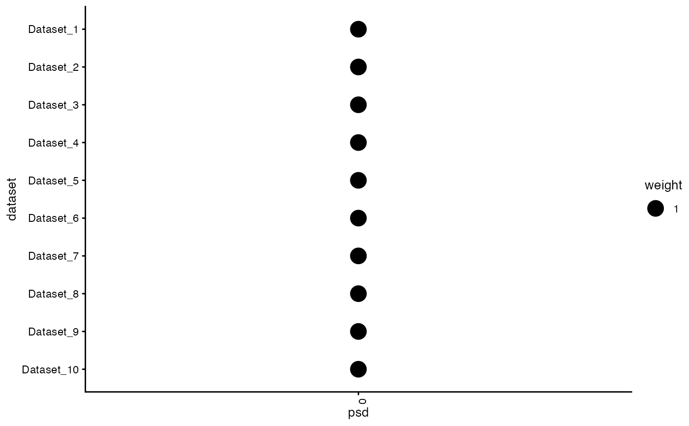
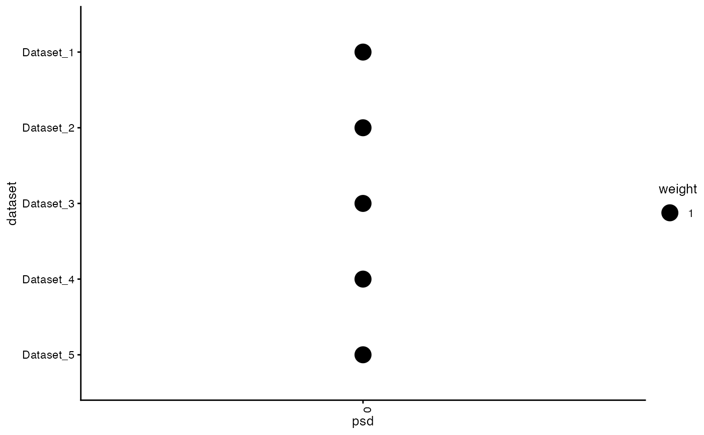

This function generates a heatmap plot visualizing the posterior weights from a fash object.
The y-axis shows dataset names, the x-axis shows PSD grid values, and point sizes
represent the posterior weights.
plot_heatmap(
object,
selected_indices = NULL,
size_range = c(1, 8),
size_breaks = NULL,
font_size = 10,
...
)A fash object containing posterior weights.
Optional character vector of dataset names or numeric indices
to specify which rows (datasets) to display. Default is NULL (all datasets).
A numeric vector of length 2 specifying the range of point sizes. Default is c(1, 8).
A numeric vector specifying size breaks from 0.1 to 0.9.
Default is NULL, which automatically selects a set of breaks.
A numeric value specifying the base font size for theme elements. Default is 10.
Additional arguments passed to ggplot2::theme or ggplot2::geom_point.
A ggplot object representing the heatmap plot of posterior weights.
# Simulate example
data_list <- lapply(1:10, function(i) data.frame(y = rpois(16, 5), x = 1:16, offset = 0))
grid <- seq(0, 2, length.out = 6)
fash_obj <- fash(data_list = data_list, Y = "y", smooth_var = "x", grid = grid, likelihood = "poisson")
#> Starting data setup...
#> Completed data setup in 0.00 seconds.
#> Starting likelihood computation...
#>
|
| | 0%
|
|======= | 10%
|
|============== | 20%
|
|===================== | 30%
|
|============================ | 40%
|
|=================================== | 50%
|
|========================================== | 60%
|
|================================================= | 70%
|
|======================================================== | 80%
|
|=============================================================== | 90%
|
|======================================================================| 100%
#> Completed likelihood computation in 0.26 seconds.
#> Starting empirical Bayes estimation...
#> Completed empirical Bayes estimation in 0.00 seconds.
#> fash object created successfully.
# Heatmap plot for all datasets
plot_heatmap(fash_obj)

# Subset some datasets
plot_heatmap(fash_obj, selected_indices = 1:5)
